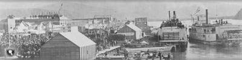
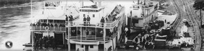
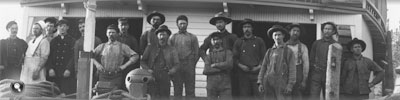
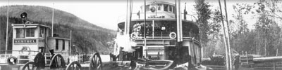

En juillet 1900, le chemin de fer de la White Pass & Yukon Route (WP&YR) entre Skagway, sur la côte de l’Alaska, et Whitehorse, était terminé. Il était désormais pratique de transporter des marchandises et des passagers par bateau en empruntant le cours supérieur du fleuve entre Whitehorse et Dawson.
À la fin du 19e siècle, le cours inférieur du fleuve — entre Dawson et St. Michael, à l’embouchure du fleuve sur la mer de Béring — avait été la principale voie de transport vers les terres intérieures du Yukon.
Il fallait franchir 1500 milles (2400 km) — en remontant le courant — de St. Michael à Dawson, et ce n’est qu’à la deuxième semaine de juin que les premières marchandises parvenaient à Dawson par le cours inférieur du fleuve.
Skagway était à 1000 milles (1600 km) plus près que l’était St. Michael des principaux centres d’approvisionnement de Seattle et Vancouver, et seulement 500 milles (800 km) séparaient Whitehorse de Dawson — en descendant le courant. Avec l’achèvement du chemin de fer, la voie fluviale empruntant le cours supérieur du fleuve a acquis une prépondérance qu’elle n’a jamais perdue depuis.
Bien qu’un petit bateau à vapeur, le S.S. Yukon, eût déjà réussi à se rendre aussi loin que Fort Selkirk, en 1871, ce n’est qu’à la ruée vers l’or du Klondike qu’on a pu apercevoir les premiers bateaux à aubes dans la partie supérieure du fleuve. En 1900, jusqu’à 23 bateaux à aubes naviguaient sur les eaux du cours supérieur du fleuve, et plusieurs sociétés de transport fluvial étaient en activité.
La WP&YR avait même établi une section de transport maritime, la British Yukon Navigation Company, (BYN Co.) en 1900; en moins de trois ans, la BYN Co. était devenue propriétaire de la presque totalité des bateaux naviguant sur le cours supérieur du fleuve, à l’exception de trois navires.
Bateaux à aubes, dont le S.S. Dawson et le S.S. Yukoner, au pied de la rue Main, Whitehorse, vers 1900.
Archives du Yukon, fonds E.J. Hamacher (collection Margaret et Rolf Hougen), 2002/118 nº 24

Mise à l’eau du bateau à vapeur Dawson à partir des cales de lancement de Whitehorse, au début de la saison de navigation de 1906.
Archives du Yukon, fonds E.J. Hamacher (collection Margaret et Rolf Hougen), 2002/118 nº 79

Timonerie du S.S. Prospector.
Archives du Yukon, collection de la famille Scott/Phelps, 89/31 nº 59
Les bateaux à aubes Gov. Pingree et Philip B. Low, Dawson, vers 1898.
Archives du Yukon, collection du Anchorage Fine Arts Museum, nº 2435

La foule salue l’arrivée du S.S. Monarch, le 21 juillet 1898, à Dawson. C’était le premier bateau à vapeur arrivant de St. Michael cette année-là.
Archives du Yukon, Collection du Musée MacBride, nº 3806

Étrave d’un bateau en construction à Whitehorse.
Archives du Yukon, fonds William Puckett, 82/344 nº 16
Avant l’achèvement du chemin de fer, les marchandises transitaient de Bennett à Canyon City (sur la photo), où elles étaient déchargées puis transportées le long du canyon Miles, puis rechargées à Whitehorse.
Archives du Yukon, fonds Eric Hegg, nº 2695
Le S.S. Bailey, arrêté pour un chargement de bois sur la rivière Fiftymile, vers août 1899.
Archives du Yukon, fonds H.C. Barley, nº 5201
Le Kestrel, le S.S Whitehorse et une barge, au quai de Big Salmon.
Archives du Yukon, fonds J.P. Kingscote, 84/32 nº 39

Archives du Yukon, fonds Anton Vogee, nº 478